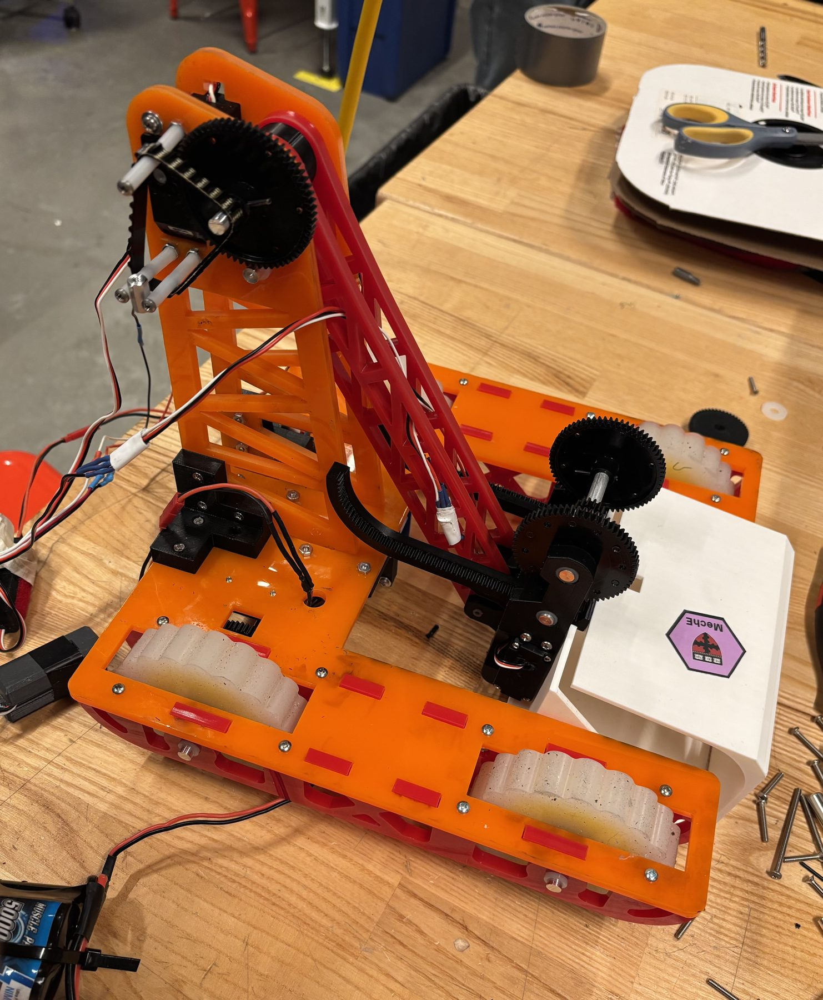
ES 51 · Computer-Aided Machine Design
TURF WARS
ROBOT
A scoop-and-claw robot built with a team of five to navigate ramps, sort game objects, and hold up under a live head-to-head match — my first project taking a design all the way from CAD to competition floor.
Sheet 01 — Context
The Challenge
Turf Wars.
ES 51 is Harvard's project-based introduction to mechanical design and shop fabrication. The semester built toward Turf Wars: 4-minute head-to-head matches where robots navigate a turf field, climb 15° and 30° ramps, and sort objects of different sizes and weights into inventory or trash zones — all under a tight set of shared constraints.
01 / Size
11″ Box of Justice
The robot had to fit inside an 11×11×11 in. volume at the start of every round, though it could expand once play began.
02 / Time
12-Week Build
Concept selection, design review, CAD, and fabrication all had to close out by a hard deadline — no changes allowed after.
03 / Material
Shared Stock Only
Every team drew from the same acrylic, PLA, shafts, silicone, servos, and hardware — no team could out-buy another.
04 / Actuators
6 Max, 3 DC Motors
A hard actuator budget shaped every decision on the drivetrain and the intake mechanism from day one.
Sheet 02 — Concept Development
Choosing a Direction
Three concepts, one Pugh matrix.
We sketched and scored three intake concepts against the criteria that actually mattered for the field: how fast we could collect objects, how cleanly we could dispense them, claw precision, ramp stability, and ease of building.
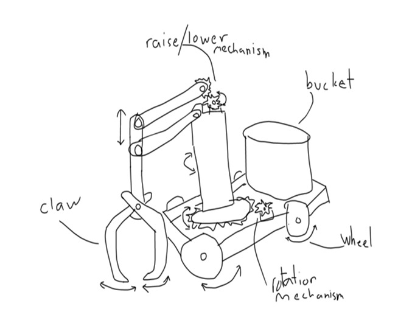
Claw/Grabber + Bucket
Precise pickup and high storage capacity, but too many degrees of freedom for the actuator budget — added weight, torque demand, and build time.
Rejected — too complex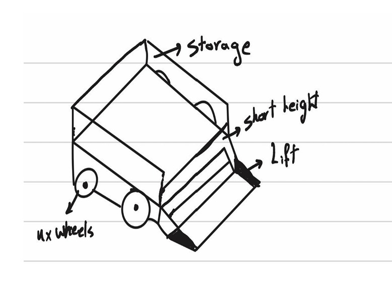
Scoop + Conveyor Belt
Stable and low center of gravity, with room for more than two objects at once — but no clear way to empty what it collected.
Rejected — no dispensing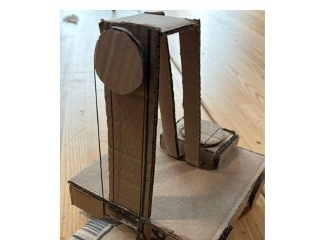
Scoop-Claw with Arm
Started as a cardboard prototype with a pulley-driven lift; refined to a simpler arm linkage. Precise intake with sufficient storage, at the cost of extra actuators.
Selected| Criteria | Claw/Grabber + Bucket (ref.) | Scoop + Conveyor Belt | Scoop-Claw with Arm |
|---|---|---|---|
| Dispensing capability | 0 | −1 | +1 |
| Collection speed | 0 | +1 | +1 |
| Claw precision | 0 | −1 | 0 |
| Stability over ramp | 0 | +1 | +1 |
| Ease of building | 0 | +1 | +1 |
| Total evaluation | 0 | +1 | +4 |
Sheet 03 — My Role
What I Owned
On a team of five.
- CONCEPT Contributed to concept development and the scoring that led us to the scoop-claw-with-arm design
- REPORT Wrote the cover and abstract for the final technical report
- CAD Worked in SolidWorks on part and assembly modeling
- SHOP Hands-on fabrication: drilling, milling, laser cutting, and 3D printing chassis and mechanism parts
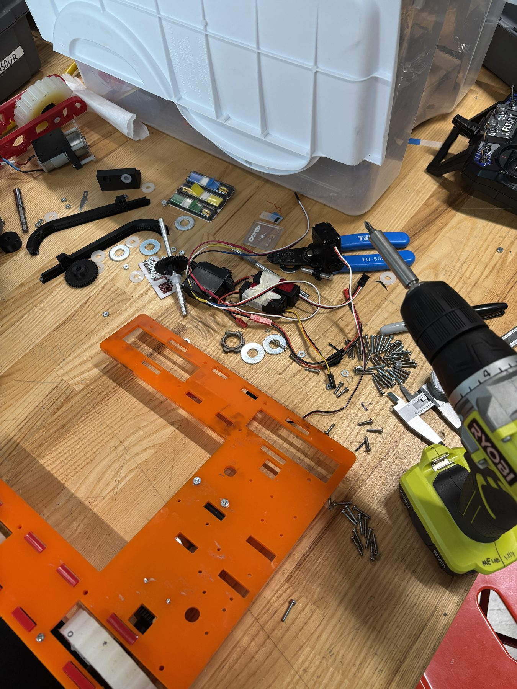
Mid-build: chassis plate, gearbox, and hardware laid out before assembly
Sheet 04 — Fabrication
Design & Build
CAD to cut parts.
The chassis, pillars, and arm links were laser-cut from acrylic; the scoop, claw, and mounting brackets were 3D-printed in PLA. Wheels were custom-cast in Eco-Flex 50 silicone from CNC-milled wax molds, chosen after testing softer and firmer silicone blends for grip on turf. Shafts were turned on the lathe to hold tight tolerances, and the two drive motors were mounted facing opposite directions to keep the whole drivetrain compact and centered.
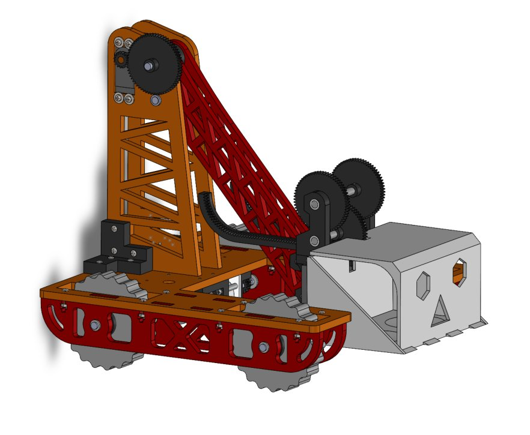
Final assembly CAD
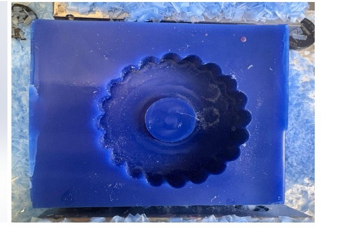
Custom wheel, cast in Eco-Flex 50 silicone
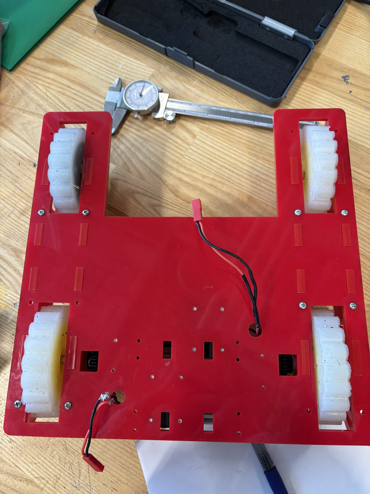
Checking wheel tolerances with a dial caliper
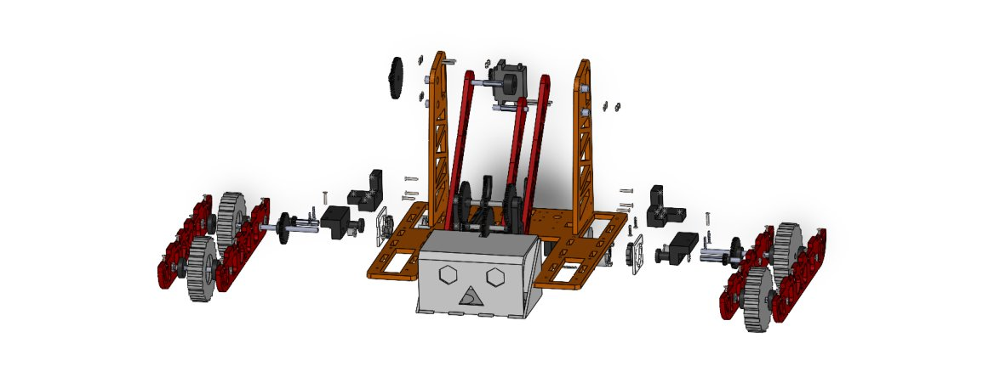
Exploded assembly, front view — arm tower, gearbox, and wheel sets
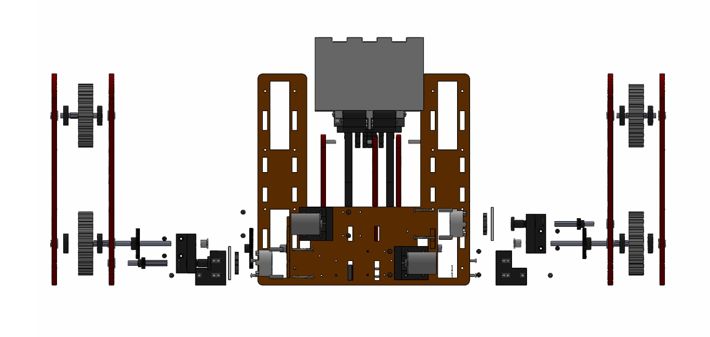
Exploded assembly, bottom view — 3:1 drivetrain gear reduction
Mounting a gearmotor to the drivetrain bracket
Bench-testing the arm and claw actuation before competition day
Sheet 05 — Analysis
Does It Actually Work?
Hand calculations, checked against the build.
Before trusting the robot to the field, the team ran the numbers on drivetrain torque, arm lifting torque, arm bending stress, and tipping stability — using the measured wheel radius, motor characterization data, and final CAD geometry.
The conclusion mattered as much as the numbers: every subsystem had enough theoretical strength and torque. The real weak points that showed up on competition day — gear alignment and ramp stability — were exactly what the shaft-deflection and tipping calculations predicted, not a sign the robot was underpowered.
Sheet 06 — Results
Competition Day
What actually happened.
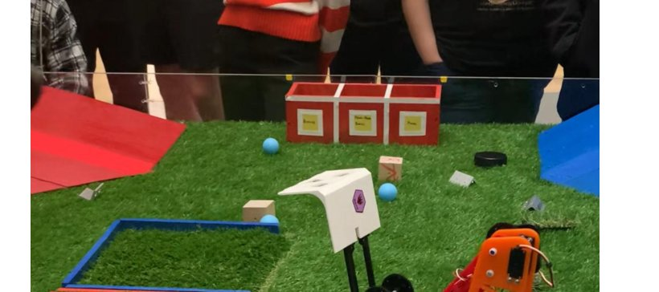
Mid-match, scoop extended toward the scoring zone
Drivetrain crossing the competition floor
What worked
The drivetrain handled the turf course cleanly through the early rounds. When operated carefully, the scoop-claw could trap objects of very different shapes — from a hockey puck to a ping-pong ball — and the arm reliably lifted and deposited them, especially into the wide trash zone.
What didn't
The scoop was more flexible than intended and could over-extend, occasionally slipping off its gear track. A gearbox misalignment on the right wheel, combined with a stability margin that our own calculations had already flagged as razor-thin, kept the robot from fully climbing the 30° ramp in the final rounds.
Sheet 07 — Reflection
What I'd Change
Future improvements.
- 01Widen the scoop's gear rail so it can't slip and detach mid-match — a small geometry fix for a recurring failure.
- 02Shift the center of mass forward to widen the stability margin on steep ramps instead of running right at the tipping threshold.
- 03Keep simplifying: our biggest reliability wins came from the simpler chassis, not the more complex arm.
- 04Build in dedicated testing time for every subsystem — the chassis got it and performed best on the field; the arm didn't and it showed.
Sheet 08 — Credits
Team 1, "The Winners"